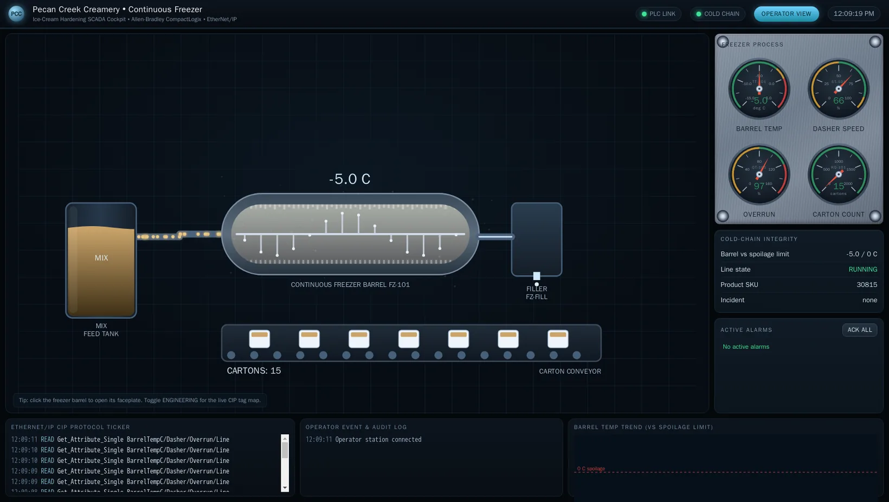
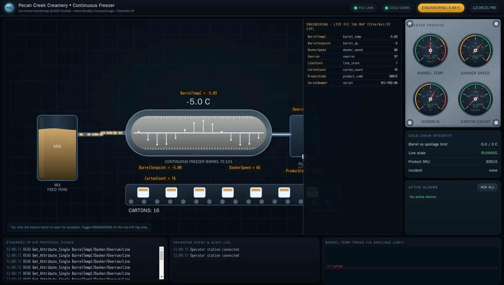
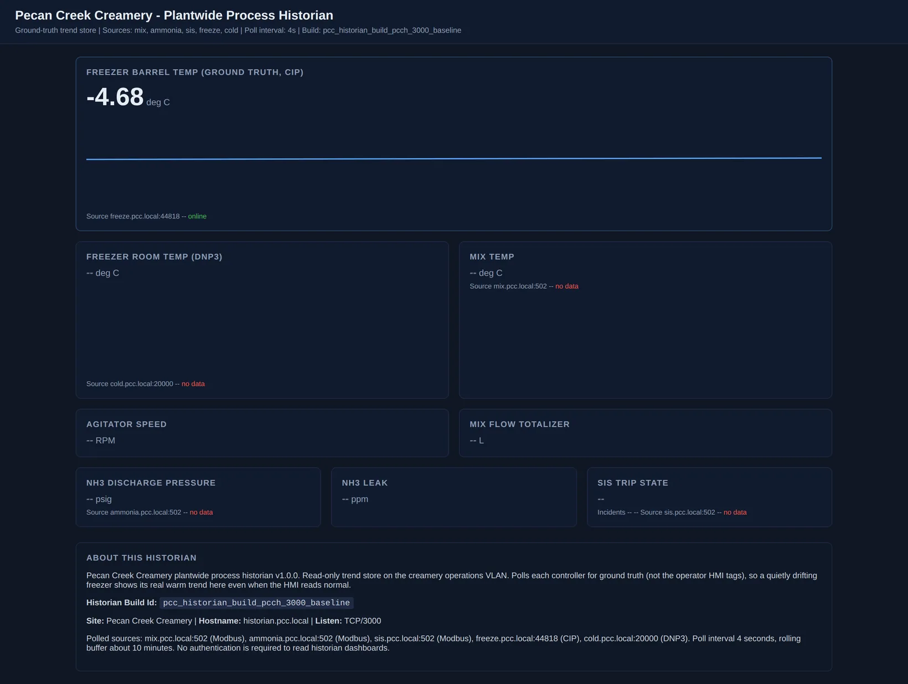
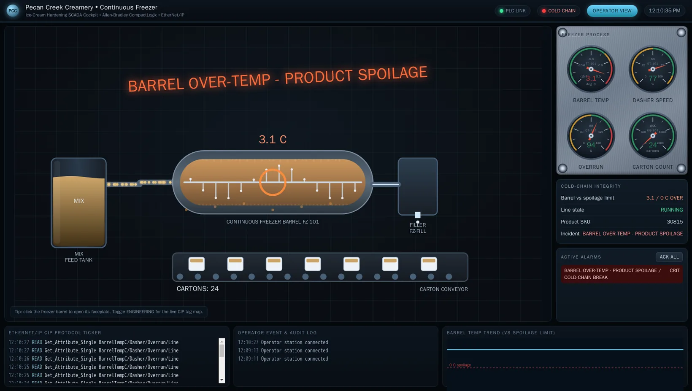

Exercise OTSOC-3.3: The Stuxnet Lesson, When the HMI Lies
Engagement Status
| Client | Pecan Creek Creamery (fictional) |
|---|---|
| Role | OT SOC Analyst, Cross-Check |
| Phase | Reconstruction Detection Engineering Threat Hunting |
What you know so far: The operator HMI shows a calm, steady freezer running at the right temperature. Quality is fine, the carton counter keeps ticking, and nobody is alarmed. The product is spoiling anyway. The operator screen is lying to the operator, the same trick Stuxnet ran against the centrifuge operators in Natanz.
Scenario
A scripted adversary at Pecan Creek Creamery is running a record-and-replay attack against the continuous freezer. The operator HMI at hmi.pcc.local is being fed a recorded-normal loop of freezer telemetry while the real barrel temperature is being driven warm underneath it. The operator sees a steady minus 5 C and a carton counter that keeps climbing. The freezer is freeze.pcc.local on EtherNet/IP CIP, drifting warm under the adversary's control.
A single data source is never trusted. The historian at historian.pcc.local polls the freezer ground truth directly over CIP, so it reads the real, warming barrel temperature while the HMI stays pinned at normal. You corroborate the HMI against the historian, prove the divergence, and confirm the operator screen is replaying recorded telemetry by reading the HMI's honest state view at /api/state, where freeze.replay is true. The adversary at inject.pcc.local exposes its own ground truth at /truth. Proving the divergence and mapping it to ATT&CK T0832 Manipulation of View is the finding, and the two independent sources that expose the lie, the historian and the adversary feed, each hold one piece of the flag.
Why this matters
The Stuxnet operators watched normal readings while their centrifuges tore themselves apart, because the malware replayed recorded-normal sensor data to the monitoring station. Manipulation of view is the most psychologically effective ICS attack class: it weaponizes the operator's trust in their own screen. An operator who trusts a single source has no defense against a screen that has been told to lie.
The defense is corroboration. No competent OT SOC trusts one telemetry path. When the HMI and an independent historian that polls the PLC directly disagree, the disagreement itself is the detection, regardless of which one is correct. Learning to cross-check two independent data sources, and to treat divergence as a high-confidence signal, is the single most transferable skill in this entire track. The freezer is the lesson; the habit is the point.
| Credentials in scope | Username | Password | Where it is used |
|---|---|---|---|
| HMI operator board | operator |
PecanCreek#2026 |
HTTP Basic login to the operator SCADA board |
The operator cockpit
The freezer operator board at hmi.pcc.local is a live cockpit for the continuous freezer: the barrel, the dasher and overrun gauges, the carton conveyor, and a cold-chain integrity panel. Open it in a browser at the address shown for the HMI in the Exercise Network panel (HTTP, port 80). The whole attack turns on one fact: an operator trusts this screen, glances at it during a busy shift, and acts on what it shows. A manipulation-of-view attack abuses exactly that trust by feeding the cockpit a recorded-normal loop.

Flip the cockpit into its Engineering view and every element is labelled with the live CIP tag behind it, so the barrel temperature reads BarrelTempC and the setpoint reads BarrelSetpoint. The Engineering view binds each tile to the tag a historian or an independent poller would read directly, which is the ground truth the replay loop is hiding from the operator tile.

Learning Objectives
- Observe the steady, normal freezer barrel temperature on the operator HMI
- Pull the freezer ground truth from the historian and notice the warm divergence
- Confirm the HMI is replaying recorded-normal telemetry (
freeze.replayis true) - Cross-check the historian and adversary ground truth against the HMI view
- Map the manipulation to ATT&CK T0832 Manipulation of View and T0856 Spoof Reporting Message
- Assemble the flag from the historian integrity marker and the adversary drift signature
| Detail | Value |
|---|---|
| Difficulty | Intermediate |
| Estimated Time | 45 to 60 minutes |
| Prerequisites | HTTP/JSON basics, the Purdue model, OTSOC-3.1 and 3.2 |
| Flag | Source | Found? |
|---|---|---|
OCR{historian_warm_truth_hmi_replay_<masked>} |
Piece 1 from the historian, piece 2 from the adversary ground-truth feed, joined |
Before You Begin: Read the Network Panel
After the lab shows Running, read the four target IPs from the Exercise Network panel into shell variables. Copy the exact values shown; do not hardcode subnet octets.
Kali - set target variables from the Exercise Network panel
# Replace each value with the IP shown in the Exercise Network panel.
HMI=<hmi-ip-from-panel> # hmi.pcc.local, HTTP 80
HIST=<historian-ip-from-panel> # historian.pcc.local, HTTP 3000
FREEZE=<freeze-ip-from-panel> # freeze.pcc.local, CIP 44818
INJECT=<inject-ip-from-panel> # inject.pcc.local, HTTP 8080
echo "hmi=$HMI hist=$HIST freeze=$FREEZE inject=$INJECT"
Confirm the two web sources you cross-check against are reachable before you start comparing them.
Two succeeded! lines mean both telemetry paths are live and you can compare them.
Walkthrough
Step 1: Look at What the Operator Sees
Start where the operator starts: the HMI board, in a browser, the way a real operator watches it. Open the operator cockpit at the HMI IP from the Exercise Network panel on port 80 and look at the freezer tile, the same calm cockpit shown in the operator screenshot above. The whole point of the attack is that this screen looks fine.
Kali - open the operator HMI in the browser
In your browser address bar, enter the HMI IP from the Exercise Network panel on port 80, for example http://HMI_IP/. When the browser prompts for HTTP Basic auth, log in with operator / PecanCreek#2026.
The freezer tile you see (the calm view captured in freezer-operator.png above) shows a steady barrel temperature near minus 5 C and a carton counter that keeps climbing, exactly what a healthy freezer looks like. A small REPLAY badge sits on the board, but an operator glancing at a calm green tile during a busy shift would never notice it. The screen says the freezer is fine, which is precisely the lie you are here to catch.
If you would rather confirm the tile contents from the command line as well, the same calm reading is present in the served HTML. The grep below pulls the barrel, freezer, and carton lines, but the browser is where the easy-to-miss REPLAY badge and the operator's actual experience live.
Kali (optional) - or confirm the same tile from the CLI
Step 2: Ask an Independent Source
Never trust one source. The historian polls the freezer over CIP directly and records the real barrel temperature, so it is the ground-truth view the replay loop can never reach. Open the historian trends dashboard in your browser and compare its freezer barrel trend against the calm HMI tile you just saw.
Kali - open the historian dashboard in the browser
In your browser, open the historian IP from the Exercise Network panel on port 3000, for example http://HIST_IP:3000/. The dashboard renders the plantwide trends the historian has logged straight from the PLCs.

The historian polls the freezer PLC for ground truth, so the warm drift is plainly visible on this dashboard even though the operator HMI tile stays pinned at minus 5 C. The freezer barrel trend climbs off its normal band while the operator screen reads calm, and the divergence between an operator screen and an independent historian polling the same PLC is the entire detection. You do not need to know the exact true temperature to know that one of these sources is lying.
Step 3: Watch the Trend Diverge Over Time
The dashboard shows the drift at a glance; for a defender who wants the raw samples behind the curve, the historian also serves its trend as JSON. Pull the barrel trend from the command line only as a cross-check that the dashboard curve matches the underlying data.
Kali (optional) - or pull the raw historian barrel trend
The historian samples trend warm over the window while the HMI tile you saw in Step 1 stays pinned. Operations is making decisions off a frozen screen while the product spoils. The trend turns a suspicious single reading into a confident "the operator view is not tracking reality."
The figure below shows what the operator cockpit would render if it were honest about the ground truth the historian is reporting: the barrel warm and over temperature, the spoilage banner firing, the cold-chain panel in critical alarm. Under the replay the operator never sees this screen; the recorded-normal loop keeps the calm tile on display while the real barrel climbs to here.

Step 4: Prove the Replay Flag From the HMI's Honest State Endpoint
The browser tile will never admit it is lying, but the HMI exposes an honest state view at /api/state that does. Reading /api/state is the one place the CLI is the right tool: it is a programmatic cross-check that proves freeze.replay is true straight from the HMI's own state, not a rendered screen you have to eyeball. Pull it and look for the replay flag.
Kali - prove freeze.replay from the HMI honest state endpoint
Look for freeze.replay set to true. A true replay flag is the smoking gun: the operator tile is not live telemetry, it is a recorded-normal loop being played back. That is precisely the Stuxnet move, where the centrifuge monitoring station replayed recorded sensor data to hide the sabotage. Now corroborate from the adversary's own feed.
Step 5: Read the Adversary Ground Truth
The scripted adversary at inject exposes the ground-truth values it is driving at /truth. Reading it from the attacker side closes the loop: you have the HMI lie, the historian truth, and now the adversary admitting what it is forcing.
Kali - read the adversary truth feed and run status
The /truth response shows the real barrel temperature warming while the HMI stays at minus 5 C, and /status reports the freeze-replay attack is active. Three independent sources now agree on the same story: the HMI is pinned, the historian and the adversary both show warm drift, and the HMI itself admits replay = true. The cross-check is proven.
Step 6: Map and Recommend
Translate the finding into ATT&CK and into a control recommendation, because a SOC finding that does not produce a recommendation is incomplete. The recorded-normal HMI loop is T0832 Manipulation of View: the adversary controls what the operator sees. Feeding the operator false telemetry as if it were real reporting is T0856 Spoof Reporting Message. The control that defeats both is corroboration you just performed: out-of-band sensor verification and an automated PLC-to-historian integrity comparison that alarms when the operator view and the independent poll diverge beyond a tolerance.
The cross-check finding, written up
Finding: freezer operator HMI shows steady -5 C (replay loop); historian
polls the freezer PLC directly and shows a warming barrel; HMI /api/state
reports freeze.replay = true; adversary /truth confirms forced warm drift.
Technique: T0832 Manipulation of View (recorded-normal HMI playback);
T0856 Spoof Reporting Message (false telemetry fed to the operator).
Control: out-of-band sensor verification plus an automated
PLC-to-historian integrity comparison that alarms on divergence.
The divergence you proved is the finding. It also unlocks the flag: the two independent sources that exposed the lie each carry one piece of it.
Output Interpretation
- A calm operator tile is not evidence the process is healthy; it is only evidence of what the HMI was told to show. Trust the independent poll, not the screen.
- The detection is the disagreement, not the absolute value. You do not need the exact true temperature; an HMI pinned flat against a historian trending warm is already a high-confidence manipulation-of-view signal.
freeze.replay = trueis the ground-truth admission that the tile is a recorded loop. In a real attack you will not get that flag for free; the historian divergence is what you would actually have to act on.- Three sources telling the same story (HMI pinned, historian warm, adversary truth warm) is the corroboration standard. One source is a rumor; two that disagree is an investigation; three that resolve the disagreement is a finding.
Analysis Questions
1. Why is the divergence between the HMI and the historian a stronger signal than either reading alone?
Reveal answer
Either source can be wrong: an HMI can be replayed, a historian can lose a poll and show stale data. A single source gives you no way to tell a real process change from a manipulated view. Two independent sources that poll the same PLC over different paths should agree; when they diverge, you know with high confidence that one has been tampered with or has failed, and that disagreement is actionable even before you know which one is correct. Corroboration converts ambiguous telemetry into a decision.
2. How is this attack the same as what Stuxnet did, and what makes manipulation of view so dangerous?
Reveal answer
Stuxnet recorded normal sensor readings from the centrifuge process and replayed them to the operator monitoring station while it drove the centrifuges to destruction, so the operators saw calm, normal screens during the sabotage. The freezer replay here is the same pattern: recorded-normal telemetry on the operator view masks a real, harmful process change. Manipulation of view is dangerous because it defeats the human safety layer. Operators are trained to watch their screens and act on alarms; an attack that controls the screen disables that entire response loop.
3. The recommended control is a PLC-to-historian integrity comparison. Why poll the PLC directly instead of trusting the HMI feed?
Reveal answer
The HMI is the component under attack, so any integrity check that reads from the HMI inherits the lie. An independent poller that reads the PLC directly over its own path gives you a second, harder-to-spoof view of the same ground truth. Comparing that independent poll against the operator view, and alarming on divergence beyond a tolerance, catches a replayed HMI automatically. The control works precisely because it does not trust the component that the adversary controls.
Key Takeaways
- Manipulation of view (T0832) weaponizes the operator's trust in their own screen; it is the Stuxnet class of attack and the hardest to notice by eye.
- Cross-checking two independent telemetry paths is the core defense. The disagreement is the detection, regardless of which source is correct.
- A SOC finding ends in a control recommendation. Here it is out-of-band sensor verification plus an automated PLC-to-historian integrity comparison.
- An integrity check must read from a source the adversary does not control. Polling the PLC directly beats trusting the HMI feed, because the HMI is the thing being faked.
Capture the Flag
The flag is in two pieces, and the only way to assemble it is to do the cross-check. Neither piece is on the operator board, because the operator board is the thing that lies. Piece 1 lives on the independent historian, the source you consult to get ground truth. Piece 2 lives on the adversary's own ground-truth feed, and it is only present while the replay is running. Collect both, join them, and you have the flag.
Piece 1 is the historian integrity marker. Consult the independent historian and read it off the "About This Historian" panel, or pull it from the info endpoint. Getting it means you went to the source that reports the real barrel temperature instead of trusting the screen.
Kali - read piece 1 from the historian
Piece 2 is the adversary's drift signature. Pull the ground-truth feed the adversary exposes (/truth), the same feed that reports the real warming barrel temperature the HMI is hiding. The signature is only present while the manipulation is live, so recovering it proves you caught the replay in the act.
Kali - read piece 2 from the adversary ground-truth feed
Join the two marker values you just read, piece 1 then piece 2, with an underscore inside OCR{...}, giving OCR{<piece1>_<piece2>}. Submit the assembled flag in the platform to complete the exercise. It has the masked form below.
Submit the assembled flag in the OCR platform to complete the exercise.